Adding External Information: Wikipedia, GLOBI, and Custom Databases
Source:vignettes/external-information.Rmd
external-information.RmdOverview
Beyond occurrence data, taxinfo integrates multiple
knowledge sources to enrich your taxonomic data with Species salience in
public knowledge (Wikipedia), species interactions
(GLOBI), scientific literature
(OpenAlex), and custom database content. This vignette
demonstrates how to leverage these functions to create comprehensive
taxonomic @tax_table.
Core External Information Functions
-
tax_get_wk_info_pq(): Wikipedia data and page statistics -
tax_globi_pq(): Species interaction data from GLOBI -
tax_oa_pq(): Scientific literature from OpenAlex
-
tax_info_pq(): Custom database integration (TAXREF, traits, etc.) -
tax_photos_pq(): Taxonomic images and media
Note: All these functions can work with either
phyloseq objects or vectors of taxonomic names (taxnames
parameter). When using a phyloseq object, results are automatically
added to the tax_table. When using taxnames, a tibble is
returned.
Wikipedia Integration
Wikipedia is a rich source of public interest and knowledge about species. By integrating Wikipedia data, you can have a proxy of the societal attention given to different taxa. The number of page views, the mean page length and the number of languages in which a species is covered can provide insights into its cultural significance measuring a sort of species salience in public knowledge.
Verify and Clean Taxonomic Names
# Clean names first
# Keep only first 20 taxa for speed
data_clean <- prune_taxa(taxa = taxa_names(data_fungi_mini)[1:20], data_fungi_mini) |>
gna_verifier_pq(data_sources = 210)Wikipedia Integration
Basic Wikipedia Data
# Add Wikipedia information (add_to_phyloseq defaults to TRUE for phyloseq objects)
data_clean_wk <- tax_get_wk_info_pq(data_clean, n_days = 30)
# View Wikipedia columns
data_clean_wk@tax_table |>
as.data.frame() |>
distinct(currentCanonicalSimple, lang, page_views, Order, page_length) |>
filter(!is.na(currentCanonicalSimple), !is.na(page_views)) |>
mutate(across(c(page_views, page_length, lang), as.numeric)) |>
filter(page_views > 0) |>
mutate(currentCanonicalSimple = factor(currentCanonicalSimple)) |>
ggplot(aes(
y = forcats::fct_reorder(currentCanonicalSimple, page_views),
x = page_views, size = page_length, col = Order
)) +
geom_segment(aes(xend = 0, yend = currentCanonicalSimple), linewidth = 1) +
geom_point() +
geom_text(aes(label = lang), size = 3, color = "black") +
scale_x_log10() +
labs(
title = "Species salience in public knowledge",
x = "Number of page views during a month (log10 scale)",
y = "Taxa (color=Order)",
size = "Mean page length"
) +
theme_idest()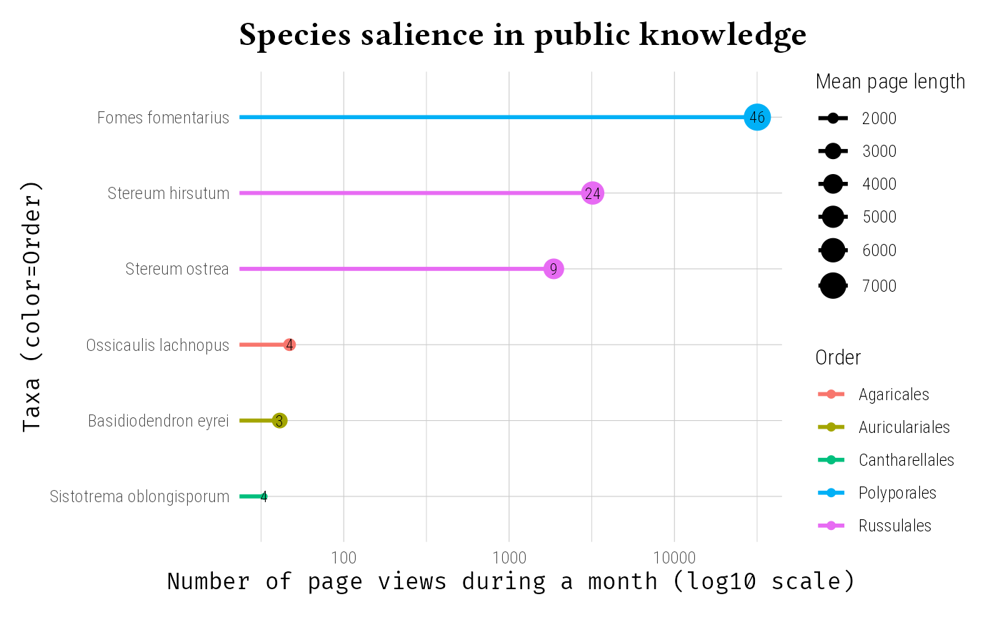
Multilingual Wikipedia Analysis
Analyze Wikipedia coverage across languages:
data_clean_wk2 <- tax_get_wk_info_pq(data_clean,
languages_pages = c("en", "fr", "de", "es")
)
# Visualize language coverage
wiki_analysis <- data_clean_wk2@tax_table |>
as.data.frame() |>
select(currentCanonicalSimple, lang, page_length, page_views) |>
mutate(across(c(lang, page_length, page_views), as.numeric)) |>
filter(!is.na(lang)) |>
distinct()
ggplot(wiki_analysis, aes(
x = lang, y = log10(page_views + 1),
size = page_length
)) +
geom_point(alpha = 0.6, color = "steelblue") +
labs(
title = "Species salience in public knowledge",
subtitle = "Page views in 4 different countries : en, fr, de and es",
x = "Number of Wikipedia languages",
y = "Page views (log10 scale)",
size = "Mean page length"
) +
theme_idest() +
ggrepel::geom_text_repel(aes(label = currentCanonicalSimple),
size = 3,
max.overlaps = 10,
)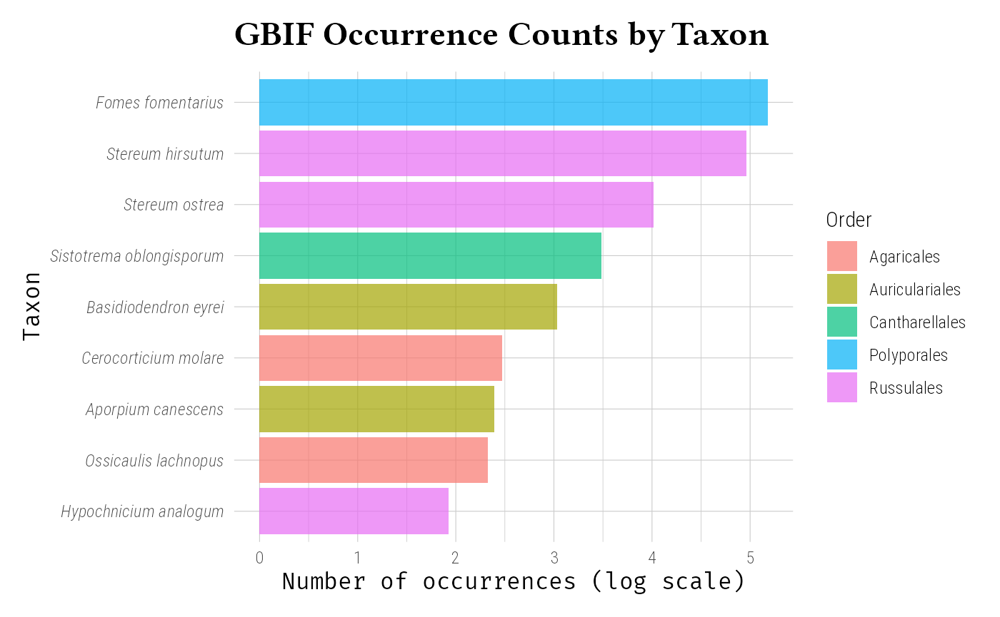
Species Interactions with GLOBI
Basic Interaction Data
GLOBI (Global Biotic Interactions) provides data on species
interactions including predation, parasitism, pollination, and more (see
rglobi::get_interaction_types() for all available
interaction types). Here we will add interaction data focusing on
parasitic and pathogenic relationships.
# Get interaction data from GLOBI
data_clean_globi <- tax_globi_pq(data_clean,
interaction_types = c("parasiteOf", "pathogenOf"),
max_interactions = 100
)
# View interaction columns
head(data_clean_globi@tax_table[, c(
"nb",
"target_taxon_name",
"pathogenOf",
"parasiteOf"
)])#> Taxonomy Table: [6 taxa by 4 taxonomic ranks]:
#> nb
#> ASV7 NA
#> ASV8 NA
#> ASV12 NA
#> ASV18 NA
#> ASV25 NA
#> ASV26 "2; 2; 2; 2; 2; 2"
#> target_taxon_name
#> ASV7 NA
#> ASV8 NA
#> ASV12 NA
#> ASV18 NA
#> ASV25 NA
#> ASV26 "Broadleaved trees and shrubs; Fagus sylvatica; Pinopsida; Quercus; Embryophyta; Prunus persica"
#> pathogenOf parasiteOf
#> ASV7 NA NA
#> ASV8 NA NA
#> ASV12 NA NA
#> ASV18 NA NA
#> ASV25 NA NA
#> ASV26 "; Prunus persica" "; Fagus sylvatica; Pinopsida; Quercus"
psmelt(data_clean_globi) |>
group_by(taxa_name) |>
summarise(
Abundance = sum(Abundance),
nb_inter = mean(map_dbl(nb, ~ sum(as.numeric(unlist(strsplit(.x, "; "))), na.rm = TRUE)), na.rm = TRUE),
n_host_pathog = mean(map_dbl(pathogenOf, ~ stringr::str_count(.x, ";")), na.rm = TRUE),
n_host_parasit = mean(map_dbl(parasiteOf, ~ stringr::str_count(.x, ";")), na.rm = TRUE),
Guild = Guild[1]
) |>
mutate(n_host_parasit = ifelse(is.na(n_host_parasit), 0, n_host_parasit)) |>
mutate(n_host_pathog = ifelse(is.na(n_host_pathog), 0, n_host_pathog)) |>
filter(nb_inter > 0) |>
ggplot(aes(
y = forcats::fct_reorder(taxa_name, nb_inter),
x = nb_inter,
color = Guild,
size = log10(1 + Abundance)
)) +
geom_point() +
geom_text(aes(label = paste(n_host_pathog, "-", n_host_parasit)),
size = 2.5, color = "black", nudge_y = 0.2
) +
theme_idest() +
labs(
title = "Interactions in GLOBI",
subtitle = "First and second number indicate the number of verified taxonomic\nentity whose the taxa are respectively pathogen or parasite.",
x = "Number of interactions",
y = "Taxa",
color = "Guild following FunGuild",
size = "Number of sequences (log10)"
)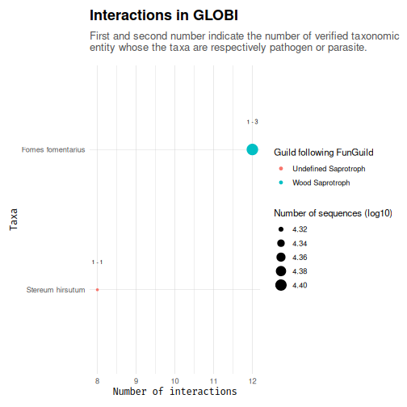
Detailed Interaction Analysis
Get detailed interaction data for further analysis:
# Get detailed interaction tibble (not added to phyloseq)
detailed_interactions <- tax_globi_pq(data_clean,
interaction_types = c("parasiteOf", "hasHost", "pathogenOf"),
max_interactions = 100,
add_to_phyloseq = FALSE
)
# Analyze interaction patterns
interaction_summary <- detailed_interactions |>
separate_rows(target_taxon_name, nb, sep = ";\\s*", convert = TRUE) |>
mutate(across(
all_of(c("hasHost", "parasiteOf")),
~ stringr::str_detect(.x, stringr::fixed(target_taxon_name))
)) |>
mutate(interaction_type = case_when(
parasiteOf ~ "parasiteOf",
hasHost ~ "hasHost",
.default = "other"
))
# Visualize interaction networks
ggplot(interaction_summary, aes(
x = interaction_type, y = nb,
fill = interaction_type
)) +
geom_violin() +
geom_jitter(col = "grey40", alpha = 0.2, height = 0) +
labs(
title = "Species Interaction Diversity",
x = "Interaction Type",
y = "Number of Target Taxa"
) +
theme_idest() +
theme(legend.position = "none")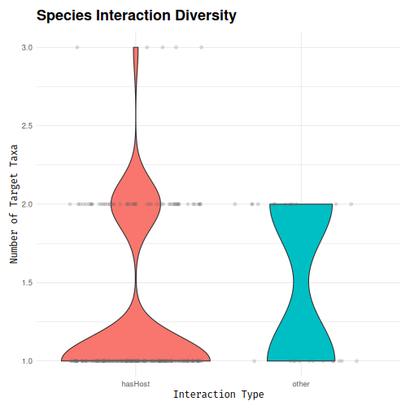
ggplot(
interaction_summary,
aes(x = taxa_name, y = target_taxon_name)
) +
geom_segment(
aes(
x = taxa_name, xend = target_taxon_name,
y = 0, yend = 1,
color = interaction_type,
linewidth = nb
),
alpha = 0.6
) +
geom_point(aes(x = taxa_name, y = 0), size = 3, color = "darkred") +
geom_point(aes(x = target_taxon_name, y = 1), size = 3, color = "darkgreen") +
scale_linewidth_continuous(range = c(0.5, 3), name = "Number of interactions") +
scale_color_viridis_d(name = "Interaction type") +
theme_minimal() +
theme(
axis.title = element_blank(),
axis.text.y = element_blank(),
axis.ticks = element_blank(),
panel.grid = element_blank(),
legend.position = "bottom"
) +
coord_flip() +
labs(title = "Fungal-Plant Interaction Network")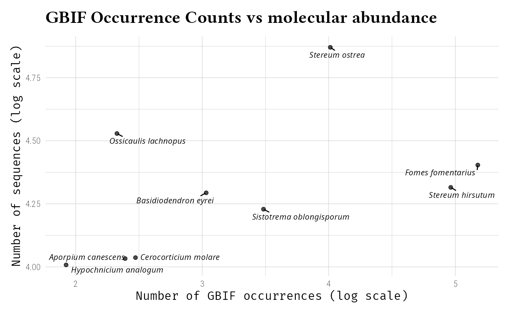
library(ggraph)
edges <- interaction_summary |>
select(
from = taxa_name, to = target_taxon_name,
weight = nb, type = interaction_type
)
nodes <- data.frame(
name = unique(c(edges$from, edges$to))
) |>
mutate(
node_type = ifelse(name %in% unique(edges$from), "Fungal", "Plant")
)
graph <- igraph::graph_from_data_frame(edges, directed = FALSE, vertices = nodes)
ggraph(graph, layout = "fr") +
geom_edge_link(aes(width = weight, color = type), alpha = 0.6) +
geom_node_point(aes(fill = node_type), size = 5, shape = 21, color = "black") +
geom_node_text(aes(label = ifelse(node_type == "Fungal", name, "")), repel = TRUE, size = 3) +
scale_edge_width_continuous(range = c(0.5, 3), name = "Number of interactions") +
scale_edge_color_manual(values = c("grey60", "purple", "cyan", "green")) +
scale_fill_manual(values = c("Plant" = "lightgreen", "Fungal" = "orange")) +
theme_idest(grid = FALSE, axis_text_size = 0) +
labs(
title = "Fungal-Plant Interaction Network",
y = "",
x = ""
)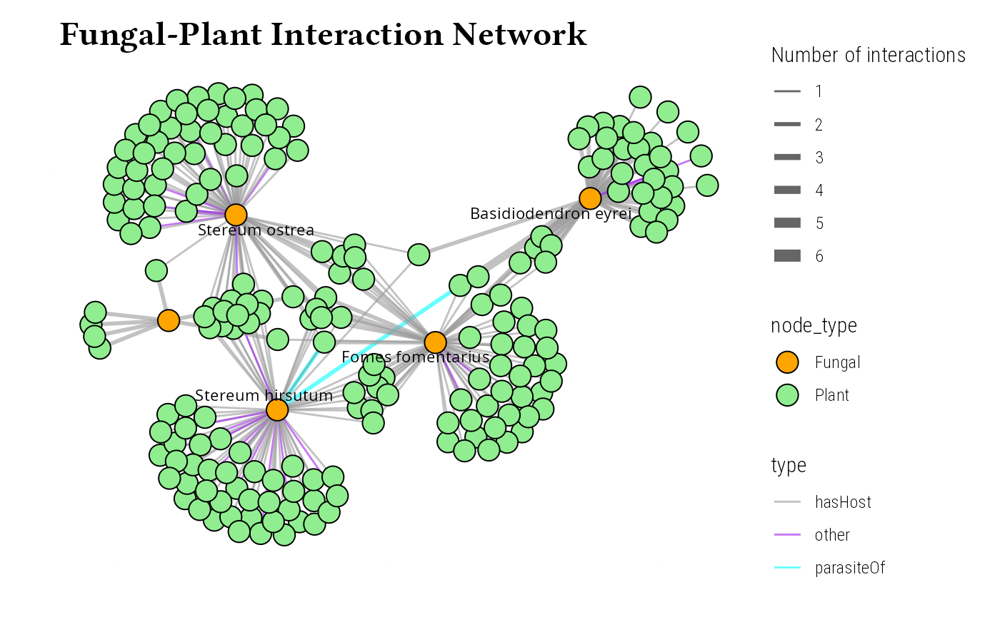
Scientific Literature with OpenAlex
Literature Metrics
Get publication data for your taxa and add it to the previous wikipedia-enhanced dataset:
data_clean_oa <- tax_oa_pq(data_clean_wk)#> Taxonomy Table: [6 taxa by 3 taxonomic ranks]:
#> n_doi
#> ASV7 NA
#> ASV8 " 35"
#> ASV12 NA
#> ASV18 " 35"
#> ASV25 " 4"
#> ASV26 "243"
#> list_doi
#> ASV7 NA
#> ASV8 "https://doi.org/10.1021/ol2019778; https://doi.org/10.1016/j.phytochem.2012.04.009; https://doi.org/10.1155/2014/815495; https://doi.org/10.1038/ja.2006.61; https://doi.org/10.4489/myco.2007.35.4.210; https://doi.org/10.1021/acs.jnatprod.6b00647; https://doi.org/10.4014/jmb.1112.12011; https://doi.org/10.4061/2011/749518; https://doi.org/10.1007/s13205-019-1955-6; https://doi.org/10.1201/b19978-17; https://doi.org/10.4314/ajb.v7i8.58632; https://doi.org/10.1007/s13205-015-0301-x; https://doi.org/10.1007/s10267-004-0215-7; https://doi.org/10.4489/myco.2008.36.2.114; https://doi.org/10.1002/chin.200703164; https://doi.org/10.1080/10889868.2022.2029823; https://doi.org/10.5941/myco.2012.40.2.134; https://doi.org/10.13057/biodiv/d180213; https://doi.org/10.1007/978-4-431-67008-7_12; https://doi.org/10.23880/ipcm-16000169; https://doi.org/10.35580/bionature.v12i2.1402; https://doi.org/10.1016/j.funeco.2023.101314; https://doi.org/10.1080/00275514.1971.12019168; https://doi.org/10.1615/intjmedmushr.v7.i3.230; https://doi.org/10.36706/fpbio.v3i1.4966; https://doi.org/10.1615/intjmedmushrooms.v7.i3.230; https://doi.org/10.2307/3758046; https://doi.org/10.7747/jfes.2016.32.2.158; https://doi.org/10.4489/kjm.2014.42.4.322; https://doi.org/10.1016/s0254-6299(15)30824-3; https://doi.org/10.1038/ja.2006.61; https://doi.org/10.1111/j.1748-5967.2011.00438.x; https://doi.org/10.30550/j.lil/1807; https://doi.org/10.21472/bjbs.v11n25-008; https://doi.org/10.17306/j.afw.2023.3.1"
#> ASV12 NA
#> ASV18 "https://doi.org/10.1021/ol2019778; https://doi.org/10.1016/j.phytochem.2012.04.009; https://doi.org/10.1155/2014/815495; https://doi.org/10.1038/ja.2006.61; https://doi.org/10.4489/myco.2007.35.4.210; https://doi.org/10.1021/acs.jnatprod.6b00647; https://doi.org/10.4014/jmb.1112.12011; https://doi.org/10.4061/2011/749518; https://doi.org/10.1007/s13205-019-1955-6; https://doi.org/10.1201/b19978-17; https://doi.org/10.4314/ajb.v7i8.58632; https://doi.org/10.1007/s13205-015-0301-x; https://doi.org/10.1007/s10267-004-0215-7; https://doi.org/10.4489/myco.2008.36.2.114; https://doi.org/10.1002/chin.200703164; https://doi.org/10.1080/10889868.2022.2029823; https://doi.org/10.5941/myco.2012.40.2.134; https://doi.org/10.13057/biodiv/d180213; https://doi.org/10.1007/978-4-431-67008-7_12; https://doi.org/10.23880/ipcm-16000169; https://doi.org/10.35580/bionature.v12i2.1402; https://doi.org/10.1016/j.funeco.2023.101314; https://doi.org/10.1080/00275514.1971.12019168; https://doi.org/10.1615/intjmedmushr.v7.i3.230; https://doi.org/10.36706/fpbio.v3i1.4966; https://doi.org/10.1615/intjmedmushrooms.v7.i3.230; https://doi.org/10.2307/3758046; https://doi.org/10.7747/jfes.2016.32.2.158; https://doi.org/10.4489/kjm.2014.42.4.322; https://doi.org/10.1016/s0254-6299(15)30824-3; https://doi.org/10.1038/ja.2006.61; https://doi.org/10.1111/j.1748-5967.2011.00438.x; https://doi.org/10.30550/j.lil/1807; https://doi.org/10.21472/bjbs.v11n25-008; https://doi.org/10.17306/j.afw.2023.3.1"
#> ASV25 "https://doi.org/10.1007/s11557-012-0866-2; https://doi.org/10.30796/angv.2018.3; https://doi.org/10.1016/j.myc.2017.07.008; https://doi.org/10.7868/s3034542125010058"
#> ASV26 "https://doi.org/10.1155/2015/789089; https://doi.org/10.1016/j.enconman.2017.03.021; https://doi.org/10.1016/s0031-9422(99)00565-8; https://doi.org/10.1016/s0007-1536(81)80007-1; https://doi.org/10.1007/s11306-007-0100-4; https://doi.org/10.1016/j.bmcl.2007.08.072; https://doi.org/10.1016/s0007-1536(85)80118-2; https://doi.org/10.1248/bpb.28.201; https://doi.org/10.1016/j.foodchem.2013.07.124; https://doi.org/10.1038/ja.2006.16; https://doi.org/10.7164/antibiotics.55.208; https://doi.org/10.1055/s-0034-1382828; https://doi.org/10.1021/acs.orglett.5b01356; https://doi.org/10.1016/j.phytol.2019.02.007; https://doi.org/10.1016/s0007-1536(75)80146-x; https://doi.org/10.1016/s0007-1536(75)80145-8; https://doi.org/10.7164/antibiotics.54.521; https://doi.org/10.1016/s0953-7562(09)80110-x; https://doi.org/10.1016/j.fct.2017.05.036; https://doi.org/10.1371/journal.pone.0255899; https://doi.org/10.1016/j.fitote.2018.05.026; https://doi.org/10.1016/j.biortech.2012.03.047; https://doi.org/10.1021/ol502441n; https://doi.org/10.1016/s0007-1536(85)80070-x; https://doi.org/10.1128/aem.00036-18; https://doi.org/10.1007/s00253-010-2668-2; https://doi.org/10.1080/03639040500530026; https://doi.org/10.1111/j.1469-8137.1985.tb03674.x; https://doi.org/10.5941/myco.2015.43.3.297; https://doi.org/10.1016/s0007-1536(77)80183-6; https://doi.org/10.1016/j.phytochem.2021.112852; https://doi.org/10.1098/rstb.1897.0013; https://doi.org/10.1099/00221287-89-2-229; https://doi.org/10.22092/ari.2019.126283.1340; https://doi.org/10.4014/jmb.1210.10060; https://doi.org/10.1080/10286020.2014.959439; https://doi.org/10.1099/00221287-131-1-207; https://doi.org/10.1016/0038-0717(78)90031-7; https://doi.org/10.1016/j.bioorg.2020.103760; https://doi.org/10.1002/cbdv.202100409; https://doi.org/10.1111/j.1469-8137.1990.tb00929.x; https://doi.org/10.1080/03601230600616072; https://doi.org/10.1016/j.ijbiomac.2020.01.097; https://doi.org/10.1111/j.1469-8137.1989.tb00362.x; https://doi.org/10.1016/j.phytochem.2022.113227; https://doi.org/10.1080/10412905.2010.9700277; https://doi.org/10.1080/14786419.2020.1779266; https://doi.org/10.1016/j.lwt.2022.113179; https://doi.org/10.1099/00221287-89-2-235; https://doi.org/10.1080/14786419.2022.2047046; https://doi.org/10.3390/foods11111587; https://doi.org/10.4067/s0717-97072016000400015; https://doi.org/10.1016/j.phytochem.2024.114253; https://doi.org/10.1080/02772249909358816; https://doi.org/10.1016/s0007-1536(85)80015-2; https://doi.org/10.3390/foods12132507; https://doi.org/10.1098/rspl.1897.0109; https://doi.org/10.1186/s40643-025-00842-3; https://doi.org/10.5109/20309; https://doi.org/10.1016/j.jafr.2025.102101; https://doi.org/10.2478/johr-2022-0003; https://doi.org/10.1016/s1130-1406(07)70059-1; https://doi.org/10.1007/s13659-025-00505-y; https://doi.org/10.1128/spectrum.02624-22; https://doi.org/10.1016/j.eti.2019.100369; https://doi.org/10.2298/gsf0591179m; https://doi.org/10.1080/00021369.1976.10862288; https://doi.org/10.1023/a:1008638409410; https://doi.org/10.1111/j.1574-6968.2002.tb11245.x; https://doi.org/10.1080/14786419.2019.1687478; https://doi.org/10.1016/s0040-4020(01)92573-6; https://doi.org/10.1007/bf00167925; https://doi.org/10.1007/s00248-004-0240-2; https://doi.org/10.1007/bf01086322; https://doi.org/10.1021/np010602b; https://doi.org/10.1002/(sici)1522-2675(19990908)82:9<1418::aid-hlca1418>3.0.co;2-o; https://doi.org/10.14601/phytopathol_mediterr-1621; https://doi.org/10.1039/c0jm01144d; https://doi.org/10.1111/j.1574-6968.1992.tb05493.x; https://doi.org/10.1080/00275514.1994.12026373; https://doi.org/10.1002/cbic.201300349; https://doi.org/10.1007/bf02906805; https://doi.org/10.14601/phytopathol_mediterr-1552; https://doi.org/10.1016/j.cropro.2016.07.014; https://doi.org/10.1007/s00226-006-0087-4; https://doi.org/10.1263/jbb.106.162; https://doi.org/10.1016/s0168-1656(00)00264-9; https://doi.org/10.2307/3760718; https://doi.org/10.1111/j.1469-8137.1985.tb02825.x; https://doi.org/10.1016/j.ygeno.2019.04.012; https://doi.org/10.1038/211868a0; https://doi.org/10.1016/j.ibiod.2008.03.010; https://doi.org/10.1016/s0045-6535(97)00363-9; https://doi.org/10.1007/s12649-010-9052-4; https://doi.org/10.1016/j.biortech.2004.01.007; https://doi.org/10.36253/phyto-4911; https://doi.org/10.1007/978-3-031-23031-8_125; https://doi.org/10.1016/s2707-3688(23)00041-9; https://doi.org/10.37489/0235-2990-2025-70-7-8-10-18; https://doi.org/10.14601/phytopathol_mediterr-1622; https://doi.org/10.14601/phytopathol_mediterr-1574; https://doi.org/10.1400/68063; https://doi.org/10.36253/phyto-4846; https://doi.org/10.1400/57803; https://doi.org/10.1002/chin.200022202; https://doi.org/10.1002/chin.200809202; https://doi.org/10.1002/chin.200002252; https://doi.org/10.5530/jam.2.6.6; https://doi.org/10.1016/j.ecoenv.2012.01.013; https://doi.org/10.1002/chin.200233249; https://doi.org/10.1111/j.1469-8137.1985.tb02823.x; https://doi.org/10.14601/phytopathol_mediterr-16293; https://doi.org/10.1016/s0953-7562(09)81261-6; https://doi.org/10.1002/chin.200140248; https://doi.org/10.1002/chin.200634183; https://doi.org/10.14601/phytopathol_mediterr-1531; https://doi.org/10.15407/biotech6.03.116; https://doi.org/10.1007/s11270-014-1872-6; https://doi.org/10.1007/s40974-019-00123-8; https://doi.org/10.14601/phytopathol_mediterr-1537; https://doi.org/10.17099/jffiu.65672; https://doi.org/10.1002/chin.201514254; https://doi.org/10.1016/j.tetlet.2005.11.150; https://doi.org/10.1007/bf02628843; https://doi.org/10.3390/pathogens11091006; https://doi.org/10.1099/00221287-138-6-1147; https://doi.org/10.1017/s0953756200003579; https://doi.org/10.1515/pjen-2016-0026; https://doi.org/10.5424/sjar/2008064-357; https://doi.org/10.1080/02827589809383004; https://doi.org/10.1007/s11676-018-0612-y; https://doi.org/10.1007/s00248-004-0075-x; https://doi.org/10.1016/s0960-8524(99)00040-1; https://doi.org/10.1111/j.1469-8137.1990.tb00930.x; https://doi.org/10.1111/j.1469-8137.1979.tb02677.x; https://doi.org/10.2323/jgam.59.279; https://doi.org/10.1080/09593330.2012.760654; https://doi.org/10.1016/s0953-7562(09)80755-7; https://doi.org/10.3390/ijms20235990; https://doi.org/10.3390/ijms24032318; https://doi.org/10.3989/ajbm.2292; https://doi.org/10.1016/j.foreco.2012.11.010; https://doi.org/10.1016/j.heliyon.2024.e28709; https://doi.org/10.1400/57806; https://doi.org/10.1007/bf02617665; https://doi.org/10.1080/02772249509358218; https://doi.org/10.3390/plants12132553; https://doi.org/10.1271/bbb1961.40.559; https://doi.org/10.1111/icad.12055; https://doi.org/10.3390/antibiotics11050622; https://doi.org/10.1400/14576; https://doi.org/10.7764/rcia.v35i2.359; https://doi.org/10.2202/1542-6580.1935; https://doi.org/10.1016/s0007-1536(84)80078-9; https://doi.org/10.4155/bfs.11.129; https://doi.org/10.1007/s10532-023-10045-2; https://doi.org/10.3390/f14102029; https://doi.org/10.1080/10826068.2022.2109048; https://doi.org/10.35580/bionature.v12i2.1402; https://doi.org/10.4028/www.scientific.net/amr.778.818; https://doi.org/10.1094/pd-90-0835a; https://doi.org/10.1080/10934529.2012.672317; https://doi.org/10.3390/jof10080557; https://doi.org/10.1111/efp.12499; https://doi.org/10.1111/j.1365-3059.2008.01898.x; https://doi.org/10.1016/j.mycres.2005.12.004; https://doi.org/10.14601/phytopathol_mediterr-1854; https://doi.org/10.18470/1992-1098-2020-4-75-98; https://doi.org/10.1016/s0269-915x(99)80044-5; https://doi.org/10.5586/am.1999.022; https://doi.org/10.51258/rjh.2021.18; https://doi.org/10.1016/0047-7206(76)90001-7; https://doi.org/10.1016/s0378-1097(02)00710-3; https://doi.org/10.14601/phytopathol_mediterr-1848; https://doi.org/10.1007/s00253-023-12621-1; https://doi.org/10.33585/cmy.18303; https://doi.org/10.34101/actaagrar/72/1602; https://doi.org/10.1080/10934529.2015.1030294; https://doi.org/10.4067/s0718-221x2014005000012; https://doi.org/10.3161/15052249pje2020.68.1.002; https://doi.org/10.1111/efp.12634; https://doi.org/10.33064/iycuaa2013574011; https://doi.org/10.1016/j.apsb.2017.03.001; https://doi.org/10.5658/wood.2013.41.1.19; https://doi.org/10.3389/fmicb.2023.1148750; https://doi.org/10.36490/agri.v4i2.169; https://doi.org/10.4102/abc.v10i4.1557; https://doi.org/10.2298/gsf0591031m; https://doi.org/10.5962/p.416934; https://doi.org/10.1016/s0007-1536(82)80155-1; https://doi.org/10.33585/cmy.38303; https://doi.org/10.1560/ijps.56.4.349; https://doi.org/10.2478/ffp-2020-0009; https://doi.org/10.1080/00275514.1971.12019168; https://doi.org/10.3897/ap.2.e57555; https://doi.org/10.1080/00021369.1976.10862080; https://doi.org/10.15421/40270608; https://doi.org/10.15177/seefor.20-17; https://doi.org/10.2298/zmspn1324367m; https://doi.org/10.51826/piper.v13i25.99; https://doi.org/10.2524/jtappij.46.426; https://doi.org/10.1088/1755-1315/914/1/012077; https://doi.org/10.71024/ecobios/2024/v1i1/15; https://doi.org/10.2307/3758046; https://doi.org/10.7747/jfes.2016.32.2.158; https://doi.org/10.35414/akufemubid.871487; https://doi.org/10.1016/s0254-6299(15)30824-3; https://doi.org/10.15835/buasvmcn-agr:11146; https://doi.org/10.1016/j.bmcl.2007.08.072; https://doi.org/10.22370/bolmicol.1998.13.0.962; https://doi.org/10.14601/phytopathol_mediterr-1739; https://doi.org/10.1080/11263506509430811; https://doi.org/10.1038/hdy.1977.87; https://doi.org/10.1080/01811789.1980.10826458; https://doi.org/10.1111/j.1748-5967.2011.00438.x; https://doi.org/10.1093/oxfordjournals.aob.a087760; https://doi.org/10.5281/zenodo.2547732; https://doi.org/10.14288/1.0106036; https://doi.org/10.51419/202134415.; https://doi.org/10.1007/978-94-007-5634-2_167; https://doi.org/10.24127/edubiolock.v4i3.4399; https://doi.org/10.16955/bkb.07560; https://doi.org/10.7905/bbmspu.v3i3.727; https://doi.org/10.15421/20133_60; https://doi.org/10.54026/aart/1044; https://doi.org/10.5937/sustfor2490119v; https://doi.org/10.1016/j.micres.2025.128374; https://doi.org/10.3390/foods11111587; https://doi.org/10.13287/j.1001-9332.202001.037; https://doi.org/10.1098/rspl.1897.0141; https://doi.org/10.1016/0008-8749(82)90390-2; https://doi.org/10.3390/agronomy15081851; https://doi.org/10.15835/buasvmcn-hort:7017; https://doi.org/10.22055/ppr.2016.11974; https://doi.org/10.3390/f15050850; https://doi.org/10.1016/j.funbio.2025.101661; https://doi.org/10.2478/eces-2025-0020; https://doi.org/10.1007/s11274-025-04293-y; https://doi.org/10.34736/fnc.2025.129.2.001.08-17; https://doi.org/10.21266/2079-4304.2025.254.256-278; https://doi.org/10.6084/m9.figshare.791635.v2; https://doi.org/10.5731/pdajpst.2022.012769; https://doi.org/10.32782/agrobio.2024.1.3"
#> taxa_name
#> ASV7 "NA"
#> ASV8 "Stereum ostrea"
#> ASV12 "Xylodon"
#> ASV18 "Stereum ostrea"
#> ASV25 "Ossicaulis lachnopus"
#> ASV26 "Stereum hirsutum"Research Interest Analysis
Analyze research patterns:
data_clean_oa@tax_table |>
as.data.frame() |>
select(
currentCanonicalSimple,
n_doi,
n_citation,
page_views,
lang,
Family
) |>
mutate(across(any_of(c("n_doi", "n_citation", "page_views", "lang")), as.numeric)) |>
distinct(currentCanonicalSimple, .keep_all = TRUE) |>
ggplot(aes(
x = log10(n_doi + 1),
y = log10(page_views + 1)
)) +
geom_smooth(method = "lm", se = TRUE) +
geom_point(aes(size = n_citation / n_doi, color = lang), alpha = 0.6) +
labs(
title = "Scientific Interest vs Public Interest",
x = "Number of Publications (log10)",
y = "Wikipedia Page Views (log10)",
size = "Mean nb of citation"
) +
ggrepel::geom_text_repel(aes(label = currentCanonicalSimple), size = 3, color = "black", fontface = "italic") +
theme_idest() +
ggpmisc::stat_poly_eq(
aes(label = paste(..eq.label.., ..rr.label.., sep = "~~~")),
formula = y ~ x,
parse = TRUE
)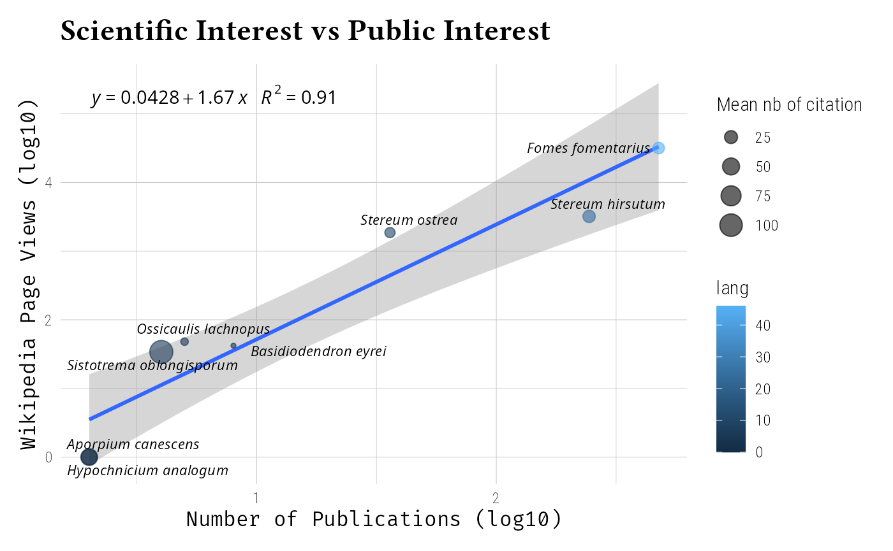
Custom Database Integration
Fungal Traits Database
Integrate trait databases using tax_info_pq(). Here we
will use a bigger phyloseq object to found more informations in the
mini-trait database. When using true database, you should find more
information, even with less taxa.
data_clean_full <- gna_verifier_pq(data_fungi, data_sources = 210)
# Load fungal traits database
fungal_traits <- system.file("extdata", "fun_trait_mini.csv",
package = "taxinfo"
)
# Add trait information
data_clean_ft <- tax_info_pq(data_clean_full,
taxonomic_rank = "genusEpithet",
file_name = fungal_traits,
csv_taxonomic_rank = "GENUS",
col_prefix = "ft_",
sep = ";"
)
# View trait columns
data_clean_ft@tax_table |>
as.data.frame() |>
pull(ft_primary_lifestyle) |>
table()#>
#> animal_parasite lichenized litter_saprotroph
#> 4 1 10 24
#> mycoparasite plant_pathogen soil_saprotroph sooty_mold
#> 1 6 1 1
#> wood_saprotroph
#> 33TAXREF Integration
For French taxonomic data, integrate TAXREF:
# Load TAXREF data (example file)
taxref_file <- system.file("extdata", "TAXREFv18_fungi.csv",
package = "taxinfo"
)
# Add TAXREF information
data_clean_taxref <- tax_info_pq(data_clean,
file_name = taxref_file,
csv_taxonomic_rank = "LB_NOM",
csv_cols_select = NULL,
col_prefix = "taxref_"
)
psm <- psmelt(data_clean_taxref) |>
group_by(currentCanonicalSimple) |>
mutate(across(everything(), ~ replace(., . == "" | . == "NA", NA))) |>
filter(!is.na(currentCanonicalSimple)) |>
summarise(
taxref_FR = unique(taxref_FR),
taxref_HABITAT = unique(taxref_HABITAT),
occurence = sum(Abundance > 0, na.rm = TRUE),
Abundance = sum(Abundance, na.rm = T),
Order = unique(taxref_ORDRE),
taxref_NOM_VERN = unique(taxref_NOM_VERN)
) |>
filter(!is.na(Order))
ggplot(psm, aes(
x = forcats::fct_reorder(currentCanonicalSimple, occurence),
y = 1 + occurence,
fill = Order
)) +
geom_col() +
geom_text(
aes(
label = currentCanonicalSimple,
fontface = ifelse(is.na(taxref_FR), "italic", "bold.italic")
),
y = -1, hjust = 1, size = 2.5
) +
geom_text(aes(label = taxref_NOM_VERN, y = 2 + occurence), size = 3, color = "black", hjust = 0) +
coord_flip() +
scale_fill_viridis_d() +
labs(
title = "Frequences of Taxa with French common names",
subtitle = "Bold taxa are already known in France (TAXREF).",
x = "Taxa",
y = "Number of occurences (samples)"
) +
theme_idest() +
theme(
axis.text.y = element_blank(),
axis.ticks.y = element_blank()
) +
scale_y_continuous(expand = expansion(mult = c(0.35, 0.05)))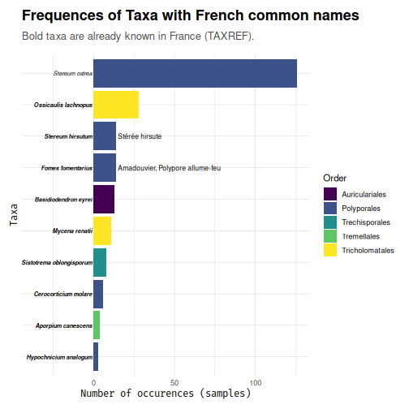
Comprehensive Data Integration
Multi-Source Enrichment
Combine multiple data sources for comprehensive profiles:
# Complete multi-source enrichment
data_fungi_full <- data_fungi_mini |>
gna_verifier_pq(data_sources = 210) |>
tax_gbif_occur_pq() |>
tax_get_wk_info_pq() |>
tax_oa_pq(count_only = TRUE) |>
tax_globi_pq(
interaction_types = c("parasiteOf", "pathogenOf"),
max_interactions = 20
) |>
tax_info_pq(
file_name = taxref_file,
csv_taxonomic_rank = "LB_NOM",
csv_cols_select = NULL,
col_prefix = "taxref_"
)
# View enriched tax_table
data_fungi_full@tax_table[1:3, ]#> Taxonomy Table: [3 taxa by 75 taxonomic ranks]:
#> taxref_LB_NOM taxref_REGNE taxref_PHYLUM taxref_CLASSE
#> ASV7 "NA" NA NA NA
#> ASV8 "Stereum ostrea" "Fungi" "Basidiomycota" ""
#> ASV12 "Xylodon" "Fungi" "Basidiomycota" ""
#> taxref_ORDRE taxref_FAMILLE taxref_SOUS_FAMILLE taxref_TRIBU
#> ASV7 NA NA NA NA
#> ASV8 "Polyporales" "Stereaceae" "" ""
#> ASV12 "Hymenochaetales" "Schizoporaceae" "" ""
#> taxref_GROUP1_INPN taxref_GROUP2_INPN taxref_GROUP3_INPN taxref_CD_NOM
#> ASV7 NA NA NA NA
#> ASV8 "Basidiomycètes" "Autres" "Autres" "900725"
#> ASV12 "Basidiomycètes" "Autres" "Autres" "901834"
#> taxref_CD_TAXSUP taxref_CD_SUP taxref_CD_REF taxref_CD_BA taxref_RANG
#> ASV7 NA NA NA NA NA
#> ASV8 "197988" "197988" "900725" "900727" "ES"
#> ASV12 "443194" "443194" "901834" NA "GN"
#> taxref_LB_AUTEUR taxref_NOMENCLATURAL_COMMENT
#> ASV7 NA NA
#> ASV8 "(Blume & T.Nees) Fr., 1838" ""
#> ASV12 "(Pers.) Gray, 1821" ""
#> taxref_NOM_COMPLET
#> ASV7 NA
#> ASV8 "Stereum ostrea (Blume & T.Nees) Fr., 1838"
#> ASV12 "Xylodon (Pers.) Gray, 1821"
#> taxref_NOM_COMPLET_HTML
#> ASV7 NA
#> ASV8 "<i>Stereum ostrea</i> (Blume & T.Nees) Fr., 1838"
#> ASV12 "<i>Xylodon</i> (Pers.) Gray, 1821"
#> taxref_NOM_VALIDE taxref_NOM_VERN
#> ASV7 NA NA
#> ASV8 "Stereum ostrea (Blume & T.Nees) Fr., 1838" ""
#> ASV12 "Xylodon (Pers.) Gray, 1821" ""
#> taxref_NOM_VERN_ENG taxref_HABITAT taxref_FR taxref_GF taxref_MAR
#> ASV7 NA NA NA NA NA
#> ASV8 "" "3" "" "" "D"
#> ASV12 "" "3" "P" "P" "P"
#> taxref_GUA taxref_SM taxref_SB taxref_SPM taxref_MAY taxref_EPA
#> ASV7 NA NA NA NA NA NA
#> ASV8 "D" "" "" "" "" ""
#> ASV12 "P" "" "" "P" "" ""
#> taxref_REU taxref_SA taxref_TA taxref_TAAF taxref_PF taxref_NC taxref_WF
#> ASV7 NA NA NA NA NA NA NA
#> ASV8 "" "" "" "" "" "P" ""
#> ASV12 "P" "" "" "" "" "" ""
#> taxref_CLI taxref_URL
#> ASV7 NA NA
#> ASV8 "" "https://taxref.mnhn.fr/taxref-web/taxa/900725"
#> ASV12 "" "https://taxref.mnhn.fr/taxref-web/taxa/901834"
#> taxref_URL_INPN taxref_NOM_VALIDE_SIMPLE
#> ASV7 NA NA
#> ASV8 "https://inpn.mnhn.fr/espece/cd_nom/900725" "Stereum ostrea"
#> ASV12 "" "Xylodon"
#> Domain Phylum Class Order
#> ASV7 "Fungi" "Basidiomycota" "Agaricomycetes" "Russulales"
#> ASV8 "Fungi" "Basidiomycota" "Agaricomycetes" "Russulales"
#> ASV12 "Fungi" "Basidiomycota" "Agaricomycetes" "Hymenochaetales"
#> Family Genus Species Trophic.Mode
#> ASV7 "Stereaceae" NA NA "Saprotroph"
#> ASV8 "Stereaceae" "Stereum" "ostrea" "Saprotroph"
#> ASV12 "Schizoporaceae" "Xylodon" "raduloides" "Saprotroph"
#> Guild Trait Confidence.Ranking
#> ASV7 "Wood Saprotroph-Undefined Saprotroph" "NULL" "Probable"
#> ASV8 "Undefined Saprotroph" "White Rot" "Probable"
#> ASV12 "Undefined Saprotroph" "White Rot" "Probable"
#> Genus_species currentName
#> ASV7 "NA_NA" NA
#> ASV8 "Stereum_ostrea" "Stereum ostrea (Blume & T.Nees) Fr., 1838"
#> ASV12 "Xylodon_raduloides" "Xylodon (Pers.) Gray, 1821"
#> currentCanonicalSimple genusEpithet specificEpithet namePublishedInYear
#> ASV7 NA NA NA NA
#> ASV8 "Stereum ostrea" "Stereum" "ostrea" "1838"
#> ASV12 "Xylodon" "Xylodon" NA "1821"
#> authorship bracketauthorship scientificNameAuthorship Global_occurences
#> ASV7 NA NA NA NA
#> ASV8 "Fr." "Blume & T.Nees" "(Blume & T.Nees) Fr." " 10292"
#> ASV12 "Gray" "Pers." "(Pers.) Gray" NA
#> lang page_length page_views taxon_id n_doi target_taxon_name nb
#> ASV7 NA NA NA NA NA NA NA
#> ASV8 " 9" "4387.000" " 1863" "Q2710042" " 64" NA NA
#> ASV12 NA NA NA NA NA NA NA
#> parasiteOf pathogenOf
#> ASV7 NA NA
#> ASV8 NA NA
#> ASV12 NA NAData Quality Assessment
Assess information completeness across sources:
# Calculate information completeness
completeness_analysis <- data_fungi_full@tax_table |>
as.data.frame() |>
summarise(
gbif = 100 * mean(!is.na(Global_occurences)),
wikipedia = 100 * mean(!is.na(lang)),
globi = 100 * mean(!is.na(nb)),
taxref = 100 * mean(!is.na(taxref_CD_NOM)),
openalex = 100 * mean(!is.na(n_doi))
) |>
tidyr::pivot_longer(everything(), names_to = "data_source", values_to = "completeness")
# Visualize data completeness
ggplot(completeness_analysis, aes(
x = reorder(data_source, completeness),
y = completeness, fill = data_source
)) +
geom_col() +
geom_hline(yintercept = 100) +
coord_flip() +
geom_label(aes(label = paste0(round(completeness, 1), "%"), y = completeness / 2), hjust = 0.5, col = "black", fill = rgb(1, 1, 1, 0.5)) +
scale_fill_viridis_d() +
labs(
title = "Data Source Completeness",
x = "Data Source",
y = "Percentage of Taxa with Data"
) +
theme_idest() +
ylim(c(0, 100)) +
theme(legend.position = "none")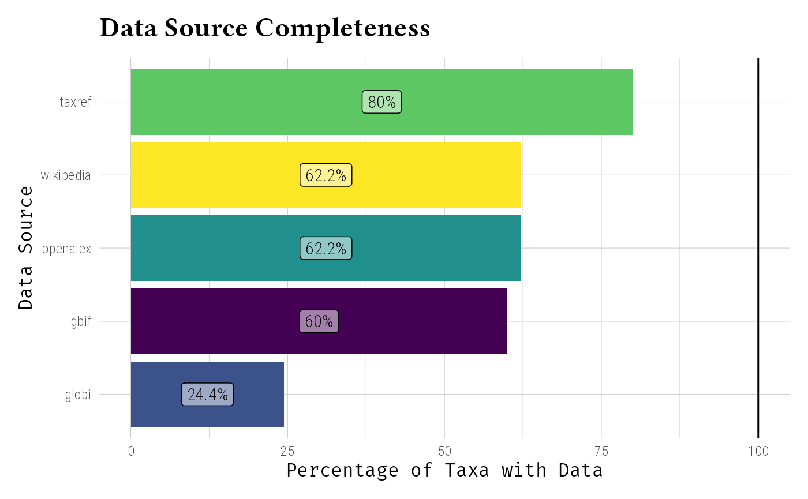
Integration Visualization
Create comprehensive visualization of integrated data:
# Prepare data for visualization
viz_data <- data_fungi_full@tax_table |>
as.data.frame() |>
mutate(taxref_FR = tidyr::replace_na(taxref_FR, "")) |>
mutate(
Global_occurences = as.numeric(Global_occurences),
wk_sum_page_views = as.numeric(page_views),
globi_nb_interactions = as.numeric(nb),
oa_n_doi = as.numeric(n_doi),
taxref = taxref_FR != ""
) |>
filter(!is.na(Global_occurences) | is.na(wk_sum_page_views)) |>
distinct(currentCanonicalSimple, .keep_all = TRUE)
# Multi-dimensional visualization
ggplot(viz_data, aes(
x = log10(Global_occurences + 1),
y = log10(wk_sum_page_views + 1)
)) +
geom_point(
aes(
size = log10(1 + as.numeric(oa_n_doi)),
shape = taxref,
color = Order
),
alpha = 0.8
) +
scale_shape_manual(values = c(17, 16), name = "Presence in France") +
scale_color_viridis_d(name = "Order") +
labs(
title = "Integrated Taxonomic Information",
subtitle = "GBIF occurrences, Wikipedia popularity, interactions, and traits",
x = "GBIF Occurrences (log10)",
y = "Wikipedia Page Views (log10)",
size = "n_doi (log10)"
) +
ggrepel::geom_text_repel(aes(label = currentCanonicalSimple), size = 3, fontface = "italic") +
theme_idest()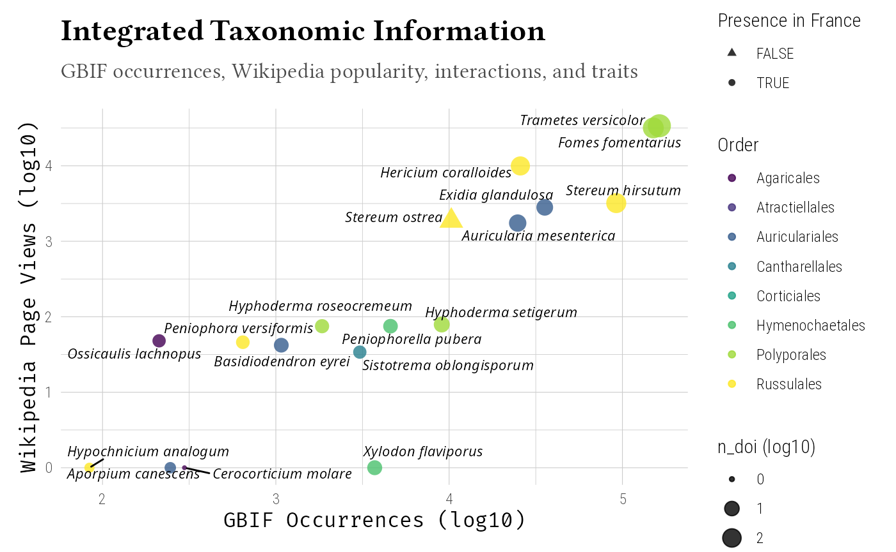
Knowledge Gap Identification
Identify taxa with limited information:
# Identify knowledge gaps
knowledge_gaps <- data_fungi_full@tax_table |>
as.data.frame() |>
select(Global_occurences, lang, nb, taxref_CD_NOM, n_doi, currentCanonicalSimple) |>
mutate(
gbif_info = !is.na(Global_occurences),
wk_info = !is.na(lang),
oa_info = !is.na(n_doi),
taxref_info = (!is.na(taxref_CD_NOM) | taxref_CD_NOM == "NA"),
globi_info = (!is.na(nb))
) |>
mutate(taxref_info = ifelse(is.na(taxref_info), FALSE, taxref_info)) |>
mutate(
info_score = gbif_info + wk_info + oa_info + taxref_info + globi_info
) |>
arrange(info_score)
# Number of available sources of information per taxa (ASV here)
knowledge_gaps |>
pull(info_score) |>
table()#>
#> 0 1 3 4 5
#> 9 8 1 16 11
# Number of available sources of information per taxonomic names (current canonical simple)
knowledge_gaps |>
distinct(currentCanonicalSimple, .keep_all = TRUE) |>
pull(info_score) |>
table()#>
#> 0 1 3 4 5
#> 1 6 1 11 7
# Poorly knowns taxonomic names (current canonical simple)
knowledge_gaps |>
distinct(currentCanonicalSimple, .keep_all = TRUE) |>
filter(info_score <= 2) |>
pull(currentCanonicalSimple)#> [1] NA "Xylodon" "Antrodiella" "Helicogloea"
#> [5] "Phanerochaete" "Auricularia" "Marchandiomyces"
knowledge_gaps |>
distinct(currentCanonicalSimple, .keep_all = TRUE) |>
filter(!is.na(currentCanonicalSimple)) |>
ComplexUpset::upset(
intersect = c("gbif_info", "wk_info", "oa_info", "taxref_info", "globi_info"),
keep_empty_groups = TRUE,
wrap = TRUE, set_sizes = F
) +
labs(
title = "Knowledge Gaps Across Data Sources",
subtitle = "Number of taxa names with available data from each source and their intersections"
) + theme_idest()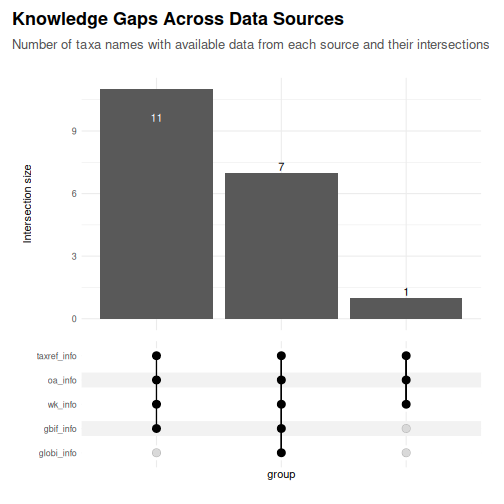
Best Practices
When integrating external data, consider the following best practices: 1. Taxonomic matching: Ensure consistent naming across sources 2. Data validation: Check for outliers or errors 3. Missing data: Handle NAs appropriately in analyses 4. Documentation: Keep track of data sources and versions
This comprehensive approach to external data integration transforms basic taxonomic lists into rich, multi-dimensional datasets suitable for advanced ecological analyses.
Session information
#> R version 4.5.1 (2025-06-13)
#> Platform: x86_64-pc-linux-gnu
#> Running under: Kali GNU/Linux Rolling
#>
#> Matrix products: default
#> BLAS: /usr/lib/x86_64-linux-gnu/openblas-pthread/libblas.so.3
#> LAPACK: /usr/lib/x86_64-linux-gnu/openblas-pthread/libopenblasp-r0.3.29.so; LAPACK version 3.12.0
#>
#> locale:
#> [1] LC_CTYPE=fr_FR.UTF-8 LC_NUMERIC=C
#> [3] LC_TIME=fr_FR.UTF-8 LC_COLLATE=fr_FR.UTF-8
#> [5] LC_MONETARY=fr_FR.UTF-8 LC_MESSAGES=fr_FR.UTF-8
#> [7] LC_PAPER=fr_FR.UTF-8 LC_NAME=C
#> [9] LC_ADDRESS=C LC_TELEPHONE=C
#> [11] LC_MEASUREMENT=fr_FR.UTF-8 LC_IDENTIFICATION=C
#>
#> time zone: Europe/Paris
#> tzcode source: system (glibc)
#>
#> attached base packages:
#> [1] stats graphics grDevices utils datasets methods base
#>
#> other attached packages:
#> [1] ggraph_2.2.2 lubridate_1.9.4 forcats_1.0.1 stringr_1.6.0
#> [5] readr_2.1.6 tidyr_1.3.1 tibble_3.3.0 tidyverse_2.0.0
#> [9] taxinfo_0.1.2 MiscMetabar_0.14.4 purrr_1.2.0 dplyr_1.1.4
#> [13] dada2_1.38.0 Rcpp_1.1.0 ggplot2_4.0.1 phyloseq_1.54.0
#>
#> loaded via a namespace (and not attached):
#> [1] splines_4.5.1 bitops_1.0-9
#> [3] urltools_1.7.3.1 ggpp_0.5.9
#> [5] triebeard_0.4.1 polyclip_1.10-7
#> [7] confintr_1.0.2 wikitaxa_0.4.0
#> [9] lifecycle_1.0.4 pwalign_1.6.0
#> [11] lattice_0.22-7 vroom_1.6.6
#> [13] MASS_7.3-65 magrittr_2.0.4
#> [15] sass_0.4.10 rmarkdown_2.30
#> [17] jquerylib_0.1.4 yaml_2.3.10
#> [19] pbapply_1.7-4 RColorBrewer_1.1-3
#> [21] ratelimitr_0.4.2 ade4_1.7-23
#> [23] abind_1.4-8 ShortRead_1.68.0
#> [25] GenomicRanges_1.62.0 BiocGenerics_0.56.0
#> [27] RCurl_1.98-1.17 tweenr_2.0.3
#> [29] IRanges_2.44.0 S4Vectors_0.48.0
#> [31] ggrepel_0.9.6 crul_1.6.0
#> [33] ggpmisc_0.6.2 rglobi_0.3.4
#> [35] vegan_2.7-2 MatrixModels_0.5-4
#> [37] pkgdown_2.2.0 permute_0.9-8
#> [39] codetools_0.2-20 DelayedArray_0.36.0
#> [41] xml2_1.5.0 ggforce_0.5.0
#> [43] tidyselect_1.2.1 httpcode_0.3.0
#> [45] farver_2.1.2 ComplexUpset_1.3.3
#> [47] viridis_0.6.5 matrixStats_1.5.0
#> [49] stats4_4.5.1 Seqinfo_1.0.0
#> [51] GenomicAlignments_1.46.0 jsonlite_2.0.0
#> [53] multtest_2.66.0 tidygraph_1.3.1
#> [55] survival_3.8-3 iterators_1.0.14
#> [57] systemfonts_1.3.1 foreach_1.5.2
#> [59] tools_4.5.1 progress_1.2.3
#> [61] ragg_1.5.0 glue_1.8.0
#> [63] gridExtra_2.3 SparseArray_1.10.1
#> [65] xfun_0.54 mgcv_1.9-4
#> [67] MatrixGenerics_1.22.0 withr_3.0.2
#> [69] fastmap_1.2.0 latticeExtra_0.6-31
#> [71] rhdf5filters_1.22.0 SparseM_1.84-2
#> [73] digest_0.6.38 timechange_0.3.0
#> [75] R6_2.6.1 colorspace_2.1-2
#> [77] textshaping_1.0.4 jpeg_0.1-11
#> [79] cigarillo_1.0.0 generics_0.1.4
#> [81] data.table_1.17.8 prettyunits_1.2.0
#> [83] graphlayouts_1.2.2 httr_1.4.7
#> [85] htmlwidgets_1.6.4 S4Arrays_1.10.0
#> [87] whisker_0.4.1 pkgconfig_2.0.3
#> [89] gtable_0.3.6 S7_0.2.1
#> [91] hwriter_1.3.2.1 XVector_0.50.0
#> [93] htmltools_0.5.8.1 biomformat_1.38.0
#> [95] scales_1.4.0 Biobase_2.70.0
#> [97] png_0.1-8 knitr_1.50
#> [99] rstudioapi_0.17.1 tzdb_0.5.0
#> [101] reshape2_1.4.5 rgbif_3.8.4
#> [103] nlme_3.1-168 curl_7.0.0
#> [105] cachem_1.1.0 zoo_1.8-14
#> [107] rhdf5_2.54.0 parallel_4.5.1
#> [109] desc_1.4.3 pillar_1.11.1
#> [111] grid_4.5.1 vctrs_0.6.5
#> [113] cluster_2.1.8.1 evaluate_1.0.5
#> [115] oai_0.4.0 cli_3.6.5
#> [117] taxize_0.10.0 compiler_4.5.1
#> [119] Rsamtools_2.26.0 rlang_1.1.6
#> [121] crayon_1.5.3 labeling_0.4.3
#> [123] interp_1.1-6 plyr_1.8.9
#> [125] fs_1.6.6 stringi_1.8.7
#> [127] viridisLite_0.4.2 deldir_2.0-4
#> [129] BiocParallel_1.44.0 assertthat_0.2.1
#> [131] WikidataQueryServiceR_1.0.0 Biostrings_2.78.0
#> [133] lazyeval_0.2.2 WikipediR_1.7.1
#> [135] quantreg_6.1 Matrix_1.7-4
#> [137] patchwork_1.3.2 hms_1.1.4
#> [139] bit64_4.6.0-1 Rhdf5lib_1.32.0
#> [141] SummarizedExperiment_1.40.0 igraph_2.2.1
#> [143] memoise_2.0.1 openalexR_2.0.2
#> [145] RcppParallel_5.1.11-1 bslib_0.9.0
#> [147] bit_4.6.0 WikidataR_2.3.3
#> [149] ape_5.8-1 polynom_1.4-1